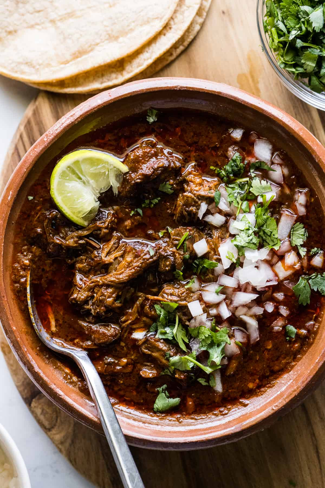

Birria

Description
Birria is a traditional Mexican stew that originated in the state of Jalisco,
though it’s now enjoyed across the country and beyond. Typically made with goat meat,
it can also be prepared with beef or lamb, marinated in a rich blend of dried chiles,
spices, garlic, and vinegar. The meat is slow-cooked until tender, resulting in a
flavorful, spicy, and aromatic dish.
Traditionally served in a bowl with its broth (called consomé), birria is often
accompanied by chopped onions, cilantro, lime, and tortillas. In recent years,
it has gained popularity in the form of birria tacos, where the meat is folded
into tortillas, pan-fried with cheese, and dipped in the savory broth. This
comforting dish is a staple at celebrations and has become a symbol of regional
Mexican cuisine.
Ingredients
For the Beef
- 4 pounds boneless beef chuck roast or beef shank
- 1/2 onion
- 1 tablespoon salt
- 1/2 tablespoon black peppercorns
- 3 bay leaves
- 1/2 teaspoon dried oregano
- 2 sprigs marjoram
- 1 sprig mint
- 2 springs thyme (optional)
For the Red Chilli Sauce
- 8 guajillo chiles
- 2 ancho chiles (optional)
- 3 garlic cloves
- 1/4 onion
- 5 cups water
- 2 teaspoons salt
Steps
- Generously season the meat with salt and pepper on all sides, and heat the olive oil in a large pot or Dutch oven over medium-high heat.
- Working in 2 batches, add the meat and sear on all sides until browned. Remove the pot from the heat, add the seared meat back into the pot, and set aside.
- While the meat is searing, add the guajillo chiles, ancho chiles, arbol chiles, tomatoes, onion, cinnamon stick, bay leaves, and peppercorns to a medium pot.
Cover completely with water and bring to a boil over high heat. Reduce the heat to low, cover, and cook for 10 minutes.
- Using a slotted spoon, transfer the softened chiles and all the other ingredients to a large blender.
- Add 1 cup of the chile-soaked cooking water, the beef broth, white vinegar, garlic, cumin, oregano, and cloves. Blend on high for a few minutes until
completely smooth.
(You may have to do this in 2 batches if your blender isn’t big enough.)
- Strain the blended sauce through a fine mesh strainer into the pot with the seared meat. Discard any solids left behind.
- Stir the meat and chile sauce together to combine and bring to a boil over high heat. Reduce the heat to low, cover, and simmer for 3 to 3 ½ hours until
the meat is fall-apart tender.
- Transfer the meat to a large bowl and shred it with 2 forks. Add the meat back into the consomé and serve as a stew in bowls with diced onion and chopped
cilantro or as tacos in corn tortillas with shredded Oaxaca cheese, cilantro, and diced onions.
Home